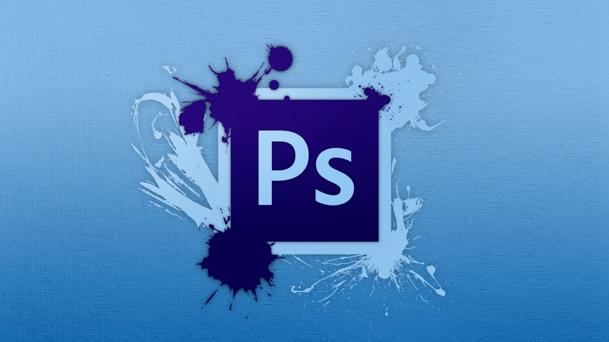

Adobe Photoshop
Adobe Photoshop ([əˈdəubɪ ˈfəutəʃɔp], Едоубі Фотошоп) — графічний редактор, розроблений і поширюваний фірмою Adobe Systems. Цей продукт є лідером ринку в області комерційних засобів редагування растрових зображень, і найвідомішим продуктом фірми Adobe. Часто цю програму називають просто Photoshop (Фотошоп). У наш час Photoshop доступний на платформах Mac OS X/Mac OS і Microsoft Windows. Ранні версії редактора були портовані під SGI IRIX, але офіційна підтримка була припинена, починаючи з третьої версії продукту. Для версії CS і CS6 можливий запуск під Linux за допомогою альтернативи Windows API — Wine.